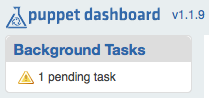

Installing Puppet Dashboard
This is a chapter of the Puppet Dashboard 1.2 manual.
Navigation
- Installing Dashboard
- Upgrading Dashboard
- Configuring Dashboard
- Maintaining Dashboard
- Using Dashboard
- Rake API
Overview
Puppet Dashboard is a Ruby on Rails web app that interfaces with Puppet. It will run on most modern Unix-like OSes (including Mac OS X and most Linux distributions), requires a certain amount of supporting infrastructure, and can be deployed and served in a variety of ways. Dashboard’s web interface supports the following browsers:
- Chrome (current versions)
- Firefox 3.5 and higher
- Safari 4 and higher
- Internet Explorer 8 and higher
Installing, in Summary
In outline, the steps to get Dashboard running are:
- Installing the external dependencies
- Installing the Dashboard code
- Configuring Dashboard
- Creating and configuring a MySQL database
- Testing that Dashboard is working
- Configuring Puppet
- Starting the delayed job worker processes
- Running Dashboard in a production-quality server
After completing these tasks, Dashboard’s main functionality will be on-line and working smoothly. You can then configure Dashboard further and enable optional features
If you are trying to upgrade Puppet Dashboard instead of installing it from scratch, see the chapter of this manual on upgrading instead of reading further in this chapter. If you’re looking for a vastly simplified installation and maintenance process, download a free trial of Puppet Enterprise and try its improved and extended web console.
Installing Dependencies
Dashboard is distributed with the version of Rails it uses, as well as most of its other dependencies, but you’ll have to ensure that the following software is installed:
- RubyGems
- Rake version 0.8.3 or newer
- MySQL database server version 5.x
- Ruby-MySQL bindings version 2.7.x or 2.8.x
On most OSes, you’ll be able to install all of these easily with the OS’s package tools.
Note: Puppet supplies Ruby 1.8.7 packages for Enterprise Linux 5 and its variants in order meet the Ruby versioning requirement for Dashboard. Also note, these packages replace existing Ruby packages in your system.
Installing Dependencies Under Ubuntu 10.04 LTS
Due to issues with Ubuntu 10.04 LTS’s version of Ruby, you can install most dependencies from packages but must manually build gem. Additionally, if you encounter performance issues, you may wish to manually upgrade your version of Ruby to patch level 299 or higher.
These instructions assume a fresh install of the OS, and may differ depending on its current configuration. The commands must be run from one of the standard shells, preferably bash, dash, or zsh.
-
Install the operating system packages:
apt-get install -y build-essential irb libmysql-ruby libmysqlclient-dev \ libopenssl-ruby libreadline-ruby mysql-server rake rdoc ri ruby ruby-dev -
Install the RubyGems package system, using the following shell script — do not use the
rubygemspackaged with the operating system:( URL="http://production.cf.rubygems.org/rubygems/rubygems-1.3.7.tgz" PACKAGE=$(echo $URL | sed "s/\.[^\.]*$//; s/^.*\///") cd $(mktemp -d /tmp/install_rubygems.XXXXXXXXXX) && \ wget -c -t10 -T20 -q $URL && \ tar xfz $PACKAGE.tgz && \ cd $PACKAGE && \ sudo ruby setup.rb ) -
Create
gemas an alternative name for thegem1.8command:update-alternatives --install /usr/bin/gem gem /usr/bin/gem1.8 1
Installing Puppet Dashboard
Your three options for installing Dashboard are to use the Puppet Labs package repositories, install the source from Git, or download a tarball of the source. Whichever way, you’ll end up with a single directory — as Rails apps are self-contained, all of Dashboard’s code, configuration, and run data will be stored in the same area. Any rake tasks mentioned later in this manual should be performed from a shell in this main directory, and any relative paths will refer to locations within it.
Installing from Packages
The best way to install Dashboard is with Puppet Labs’ official package repositories. This will automatically handle Dashboard’s dependencies, and will make for easier upgrades when new versions are released.
When installing from packages, Dashboard will be installed in /usr/share/puppet-dashboard, and the puppet-dashboard user and group will own the files; this user will be automatically created if it doesn’t exist.
Enabling the Repository
Before installing, follow the instructions here to enable the Puppet Labs package repository for your system.
Installing Dashboard
On RPM-based systems, install Puppet Dashboard via Yum:
$ sudo yum install puppet-dashboard
On Debian-based systems, install Puppet Dashboard via Apt:
$ sudo apt-get update
$ sudo apt-get install puppet-dashboard
Installing from Git
If you’re unable to use the Dashboard packages on your system, the next best way to install Dashboard is from the Puppet Labs Git repo. In the directory where you want Dashboard installed (we suggest /opt/ or /usr/share/), run:
git clone git://github.com/puppetlabs/puppet-dashboard.git
cd puppet-dashboard
git checkout v1.2.0
The advantage of using Git is that you have an easier upgrade path: you don’t have to manually remember which files to preserve when upgrading, and the actual process of upgrading is much simpler. The disadvantage is that it basically turns Git into another dependency. See upgrading for more details.
If you haven’t installed Dashboard from a package, you must create a user and group for Dashboard and chown all its files to be owned by that user and group:
sudo chown -R puppet-dashboard:puppet-dashboard /opt/puppet-dashboard
Installing from Source Tarballs
If you prefer not to use Git, you can simply download the most recent release of Puppet Dashboard and extract it into your install location:
wget http://puppetlabs.com/downloads/dashboard/puppet-dashboard-1.2.0.tar.gz
tar -xzvf puppet-dashboard-1.2.0.tar.gz
mv puppet-dashboard-1.1.1 /opt/puppet-dashboard
If you haven’t installed Dashboard from a package, you must create a user and group for Dashboard and chown all its files to be owned by that user and group.
sudo chown -R puppet-dashboard:puppet-dashboard /opt/puppet-dashboard
Configuring Dashboard
Dashboard needs a config/database.yml file and a config/settings.yml file. It ships with functional examples of each, as config/database.yml.example and config/settings.yml.example respectively.
database.yml
The database settings file is located at config/database.yml, and an example file can be found at config/database.yml.example. This file should be a YAML hash with one key for each of the standard Rails environments: production, development, and test.
- The “production” environment gives the best performance, and should be used most of the time by most users. Rails does not consider production its default environment, and you must specify it manually with the
RAILS_ENVenvironment variable when running any rake tasks or starting a WEBrick server. - The “development” environment gives worse performance, but yields better logging and error reporting when something goes wrong.
- The “test” environment is only used for running Dashboard’s automated tests, and should never be used by most users.
You will likely only ever be using the production environment. You may wish to use the same database for the production and development environments, as this can remove the pain of having to specify RAILS_ENV=production for every rake task and gives you the option of running a temporary instance with the same data in the development environment (if you ever need to collect detailed error messages, for example). You should not use the same database for the test environment, as it gets destroyed every time the tests are run.
Each environment in the database.yml file should be a hash with keys for database, username, password, encoding, and adapter. At the moment, adapter can only be mysql, and encoding should always be utf8.
Do not give Dashboard the keys to MySQL’s root user account — create a new database user for it (preferably named “dashboard”) and choose a secure password.
Since the database.yml file has to contain Dashboard’s database user and password in cleartext, you should set its mode to 660 (or some other world-unreadable mode). If you’ve created the file while logged in as a normal user, be sure to chown it to the Dashboard user.
settings.yml
The general settings file should be a YAML hash. When first configuring Dashboard, you should simply make a copy of settings.yml.example, as it’s unlikely that you’ll need to change any settings yet. (Although you may wish to change date_format, custom_logo_url, or no_longer_reporting_cutoff.)
Creating and Configuring a MySQL Database
Dashboard needs a user, a password, and at least one database. Create these using the names and passwords you chose in your database.yml file.
This will require that you use some external MySQL administration utility;1 in the standard command-line mysql client, the commands will look something like this:
CREATE DATABASE dashboard CHARACTER SET utf8;
CREATE USER 'dashboard'@'localhost' IDENTIFIED BY 'my_password';
GRANT ALL PRIVILEGES ON dashboard.* TO 'dashboard'@'localhost';
(See the MySQL manual for more information.)
Tuning
After creating the database and user, you’ll need to configure MySQL’s maximum packet size to permit larger rows in the database. On rare occasions, Dashboard can send up to 17MB of data in a single row, and to ensure that it will function under load, you should edit /etc/mysql/my.cnf to increase the limit to at least 24MB (we recommend 32MB or more):
# Allowing 32MB allows an occasional 17MB row with plenty of spare room
max_allowed_packet = 32M
Either restart the MySQL server for this setting to take effect, or run the following command from the mysql client:
mysql> set max_allowed_packet = 33554432;
Preparing Schema
Once Dashboard has its database, it can create its tables, but this has to be done manually with the db:migrate rake task. For typical use with the production environment:
rake RAILS_ENV=production db:migrate
For developing the software using the development and test environments:
rake db:migrate db:test:prepare
The db:migrate task can be safely run multiple times.
Testing That Dashboard is Working
You can now run Dashboard using Ruby’s built-in WEBrick server:
sudo -u puppet-dashboard ./script/server -e production
This will start a Dashboard instance on port 3000 using the “production” environment. You’ll be able to view Dashboard’s UI in a web browser at http://dashboardserver:3000, and your puppet master can now be configured to use it for reporting and node classification. Note that:
- You will need to have already created the puppet-dashboard user and group.
- You must specify the environment manually if you’re using anything other than “development”.
Running under WEBrick isn’t feasible for production use, since it can’t handle concurrent requests, but it can be useful when first getting Dashboard and Puppet configured. If you’d rather skip straight to a production-ready deployment, see the relevant section below.
Configuring Puppet
Puppet Dashboard has two main functions: report viewer/analyzer, and node classifier. Puppet can use either of these functions or both of them. Once you have puppet configured, you’ll need to restart puppet master.
Using Dashboard for Reports
For Dashboard to receive reports, there are two requirements:
- All agent nodes have to be configured to submit reports to the master.
- The master has to be configured to send reports to Dashboard.
Configuring Reports on Puppet 2.6.0 and Newer
-
Make sure that all agents have reporting turned on:
# puppet.conf (on each agent) [agent] report = true -
Add the
httpreport handler to your puppet master’sreportssetting and setreporturlto your Dashboard instance’sreports/uploadURL:# puppet.conf (on puppet master) [master] reports = store, http reporturl = http://dashboard.example.com:3000/reports/upload
Using Dashboard for Node Classification
You can use Dashboard’s external node classifier (ENC) alongside traditional Puppet DSL node definitions. However, if you use your own custom ENC (or LDAP nodes), you won’t be able to use Dashboard’s ENC.
To use Dashboard’s ENC, you’ll need to set the puppet master’s node_terminus and external_nodes settings, and make sure the master can access Dashboard’s node classification script, which is located at bin/external_nodes. This script’s behavior can be overridden by setting environment variables; unless you’re serving Dashboard over HTTPS, the only one you’ll need to set is PUPPET_DASHBOARD_URL.
# puppet.conf (on puppet master)
[master]
node_terminus = exec
external_nodes = /usr/bin/env PUPPET_DASHBOARD_URL=http://localhost:3000 /opt/puppet-dashboard/bin/external_node
Testing Puppet’s Connection to Dashboard
After restarting puppet master, you can run one of your puppet agents with puppet agent --test to check whether the configuration is correct. The agent should be able to retrieve its catalog and complete its run, and when you reload the Dashboard UI in your web browser, you should see “1 pending task” under the “Background Tasks” heading in the upper left corner.

This means the report arrived as expected, and will be processed once the delayed job workers are active.
Starting and Managing Delayed Job Workers
Dashboard uses a delayed_job queue to asynchronously process resource-intensive tasks. Although Dashboard won’t lose any data sent by puppet masters if these jobs don’t run, you’ll need to be running at least one delayed job worker (and preferably one per CPU core) to get the full benefit of Dashboard’s UI.
A future version of Dashboard will ship with init scripts which will let you manage the workers with Puppet or your platform’s service tools, but in the meantime, you must either use the provided monitor script or start non-daemonized workers individually with the provided rake task.
Using the monitor script
Dashboard ships a worker process manager, which can be found at script/delayed_job. This tool’s interface resembles an init script, but it can launch any number of worker processes as well as a monitor process to babysit these workers; run it with --help for more details. delayed_job requires that you specify RAILS_ENV as an environment variable. To start four worker processes and the monitor process:
$ sudo -u puppet-dashboard env RAILS_ENV=production script/delayed_job -p dashboard -n 4 -m start
In most configurations, you should run exactly as many workers as the machine has CPU cores.
Monitoring the Monitor
For additional reliability, you might want to use a standard service monitoring tool like god, monit, or runit to supervise the script/delayed_job monitor. You can also look into other ways to run delayed_job workers, as it’s becoming a fairly standard component in the Rails world.
Using the jobs:work Rake Task
We don’t recommend using rake-started workers for production, but they can be useful when testing or developing Dashboard. To start a single worker in the production environment:
$ sudo -u puppet-dashboard rake RAILS_ENV=production jobs:work
Running Dashboard in a Production-Quality Server
Although you may have tested Dashboard using the included WEBrick server script, you’ll need to deploy in a production-quality server like Apache with Passenger or Nginx with Passenger, Thin, or Unicorn before rolling out Dashboard to your entire site. Instructions follow for running Dashboard under Apache with Passenger, but as Dashboard is a fairly standard Rails application, instructions for using any popular backend should be easily adaptable.
Serving Dashboard With Passenger and Apache
First, you’ll need to ensure that Apache 2.2 and Phusion Passenger are installed. The Passenger website has installation instructions, but it’s quite possible that your OS vendor has already packaged Passenger, which can make for a much easier install.
Once Passenger is enabled, copy Dashboard’s example vhost from ext/passenger/dashboard-vhost.conf into Apache’s sites-enabled directory and edit it to match your Dashboard installation. Passenger runs Rails apps in the production environment by default, so you won’t need to explicitly set the environment (with the RailsEnv directive in the vhost configuration) unless you plan to run it in development mode. The parts of the file you’ll need to edit are:
- The port on which to serve Dashboard. This defaults to 80, but if you want to serve it on Puppet’s preferred port of 3000, you’ll need to change the opening tag of the vhost definition block to
<VirtualHost *:3000>and insert aListen 3000directive above it. - The subdomain you’ll be serving Dashboard from, which is generally just the fully-qualified domain name of this machine. Put this in the
ServerNamedirective. - The location of Dashboard’s
publicdirectory, which should go in both theDocumentRootdirective and the<Directory>block opening tag. - Your preferred log file locations, which go in the
ErrorLogandCustomLogdirectives. - The paths to Passenger,
mod_passenger, and Ruby. But before you tweak these, scan the rest of Apache’s config files: if you installed Passenger from a vendor package, it probably already inserted a global config file to make sure it’s loaded, in which case you can safely comment out the first three lines of this vhost config. Otherwise, point theLoadModule,PassengerRoot, andPassengerRubydirectives at the top of the file to the correct files and directories.
If you prefer to roll your own vhost config, see the Passenger user’s guide and note that:
- The
DocumentRootshould point to Dashboard’spublicdirectory, which needs to allow all access and have theMultiViewsoption turned off. - Passenger will need either the per-server
RailsAutoDetectdirective set toOn(which is its default state), or aRailsBaseURIdirective in the vhost definition.
Once Dashboard’s vhost config is properly configured, simply restart Apache and test that Puppet can communicate with Dashboard, as described above.
Navigation
- Installing Dashboard
- Upgrading Dashboard
- Configuring Dashboard
- Maintaining Dashboard
- Using Dashboard
- Rake API
-
Instead of creating a database manually, you can also use the
db:createordb:create:alltasks, but these require that Dashboard’s MySQL user already exist and have the appropriate permissions on the requested database. Since you’ll likely need to use raw SQL commands or another external tool to do that, you might as well just create the databases while you’re in there.↩
Contents
- Overview
- Installing, in Summary
- Installing Dependencies
- Installing Puppet Dashboard
- Configuring Dashboard
- Creating and Configuring a MySQL Database
- Testing That Dashboard is Working
- Configuring Puppet
- Starting and Managing Delayed Job Workers
- Running Dashboard in a Production-Quality Server
Download the Docs

Download Puppet Enterprise